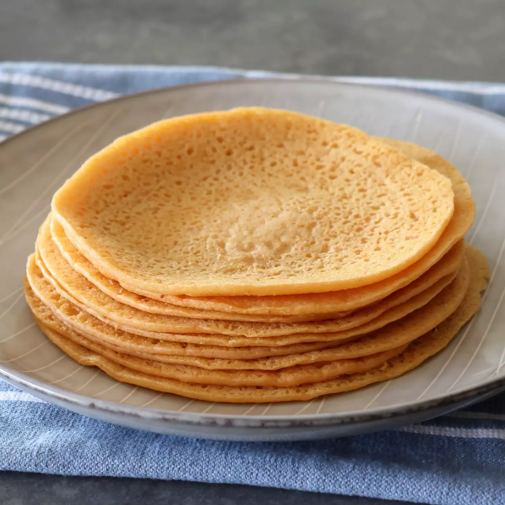

LENTIL FLATBREAD

Descriptiom
This 3-ingredient, extremely simple recipe is easier than you may think and may just become your new favorite healthy flatbread.
Ingredients
- 1 cup red lentils
- 2 cups water
- 1 teaspoon kosher salt, or to taste
Steps
- Add lentils and water to a blender, or food processor and soak for at least 3 hours.
- Blend lentils until they are very smooth. Season with salt. (Batter can be used immediately, but for best results refrigerate overnight).
- To cook, heat a non-stick pan on medium-high. Grease lightly with olive oil and allow to get hot. Add 1/4 to 1/3 cup of batter to the hot pan. Use the bottom of a ladle or spoon to spread out into a 5 or 6 inch circle. Lower heat to medium, and adjust from there if needed. Cook the first side for about 1 1/2 to 2 minutes, before flipping over. Cook the second side for about 2 minutes, before transferring to a plate.
- Keep warm flatbreads covered with a towel while cooking and stacking.